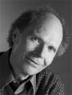

C.G. Jung Society, Seattle C.G. Jung Society, Seattle
C.G. Jung Society, Seattle C.G. Jung Society, SeattleLecture: Friday, January 13, 7 to 9 p.m.
Good Shepherd Center, Room 202, 4649 Sunnyside Ave. N., Seattle
$10 members, $15 nonmembers
2 CEUs

Why do we dream? We all have experienced dreams that awaken us, imbue us with spirit, fill us with powerful emotions, affect our bodies, puzzle our minds, and, at times, point our lives into new directions.The lecture and classes will focus on listening to and working with dreams in ways that enliven and animate how we relate to ourselves and to others. According to C.G. Jung, our dreams bring us into contact with our innermost soul, and reflect the inner and outer dynamics that impact its well-being. Dreams are the creative weaving of many threads woven by an unknown story teller, the unconscious. During the lecture we shall pay close attention to the dream images and their associated affect to open ourselves to experiencing the ambiguity and intentionality of dreams. Examples will be presented to show how living with our dreams and asking "What does the dream want?" is the basis of a most powerful practice of self-discovery, personal growth, and problem-solving.
Class: Wednesdays, January 18 and 25, February 1 and 8, 7 to 9 p.m.
Good Shepherd Center, Room 221, 4649 Sunnyside Ave. N., Seattle
$80 members, $90 nonmembers
8 CEUs
Preregister by the Friday lecture (Jan. 13). Please attend the lecture on Friday if you intend to take part in the class.
The small-group, Wednesday-evening sessions are a new venue offered by the C.G. Jung society designed to provide an environment in which participants can safely enter into the domain introduced in the lecture. There are no prerequisites other than the attendance of the Friday lecture. Following the lecture on dreams and dreaming, participants in the small-group sessions will be guided to put these ideas into practice through discussions, working with dreams they share, and exploring them through art and creative writing. Participants will also have an opportunity to explore the assumptions they bring to their work with dreams and the questions arising in this context.
Eberhard Riedel, Ph.D., D.C.S.W. , is a Diplomate Jungian Analyst in private practice in Seattle, WA. He is a member of the International Association for Analytical Psychology (IAAP), the Inter-Regional Society of Jungian Analysts (IRSJA), the North Pacific Institute for Analytical Psychology (NPIAP), and the Center for Psychoanalysis (NCP). He also holds a Ph.D. in quantum physics. Among his professional interests is work on the interconnectedness of dreaming and the creative self-expression of psyche in life and the arts and sciences.
This program has been approved for 10 CEU's by the Washington Chapter, National Association of Social Workers (NASW) for Licensed Social Workers, Licensed Marriage & Family Therapists and Licensed Mental Health Counselors. Provider number is #1975-157. The cost to receive a certificate is as follows: 10 units for lecture and class $15; 2 units for the Friday lecture $10; 8 units for attending all four Wednesday class sessions $10.
Updated: 31 December, 2005
webmaster@jungseattle.org